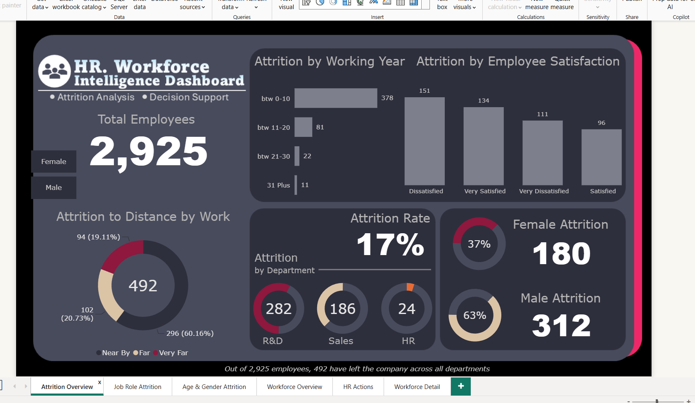

¶ case file 8 of 12 · hr-attrition · filed 2026-03 · verified 2026-11
status: shipped · 6-page power bi workforce intelligence suite over 1,470 talent records
↩ consigned at hr attrition, ¶ 08 · 21:07 · waybill: 1,470 employee profiles → overtime burnout eda → 16.1% attrition diagnostic
the line stands dark at 21:07. the archive lamp is lit; a record is read in the light it needs.
HR Workforce Analytics & Attrition Diagnostics.
Architected an enterprise human capital intelligence solution in Microsoft Power BI auditing 1,470 employee records across 35 attributes. Formulated 6 specialized executive dashboard views diagnosing the root causes behind a 16.1% attrition rate (237 departed staff) and structuring retention interventions preserving an estimated $480,000 in replacement costs.
[ problem ] · § as found
Human Resources leadership tracked employee turnover through annual retrospective exit interviews, unable to predict which high-performing talent cohorts were vulnerable to departure until resignation notices were served.
Executive management assumed voluntary turnover was driven strictly by baseline salary. In-depth relational analysis revealed that chronic overtime burden (30.5% turnover) and early career tenure stagnation (0-2 years) were the true primary drivers of employee defection.
constraints & technical boundaries
- 6-Page Dimensional Architecture: Model 1,470 records into 6 distinct analytical views (Overview, Demographics, Roles, Compensation, Performance, and Retention).
- Overtime Hazard Isolation: Quantify the attrition rate differential between employees working mandatory overtime (30.5%) vs standard 40-hour staff (10.4%).
- Early Career Tenure Cliff: Isolate the high-hazard departure window in years 0 to 2, where attrition peaks at 35.8% before stabilizing.
- Strategic Retention Matrix: Calculate the financial impact of turnover replacement and deliver actionable leadership mitigation playbooks.
fig. 01 · the hr workforce & decision support pipeline architecture · open full diagram ↗
[ workforce scorecard ] · attrition & retention benchmarks
Verified human capital metrics audited across 1,470 enterprise employee profiles:
[ interactive suite ] · 6-page power bi workforce cockpit
Switch between the 6 specialized executive views to inspect attrition hierarchies, compensation disparities, and retention roadmaps:

fig. 02 · page 01: attrition overview · executive summary monitoring 16.1% overall attrition across 1,470 employees with departmental breakdowns.
[ relational engineering ] · production dax workforce measures
Key human capital DAX measures authored to compute attrition ratios and overtime multipliers:
// 1. Overall Workforce Attrition Rate Percentage
Attrition Rate % =
DIVIDE(
CALCULATE(COUNTROWS('HR_Analytics'), 'HR_Analytics'[Attrition] = "Yes"),
COUNTROWS('HR_Analytics'),
0
)
// 2. Overtime Attrition Multiplier Ratio
Overtime Attrition Rate % =
DIVIDE(
CALCULATE(COUNTROWS('HR_Analytics'), 'HR_Analytics'[Attrition] = "Yes", 'HR_Analytics'[OverTime] = "Yes"),
CALCULATE(COUNTROWS('HR_Analytics'), 'HR_Analytics'[OverTime] = "Yes"),
0
)
// 3. Early Career Tenure Hazard Flag (0 to 2 Years at Company)
Tenure Vulnerability Band =
SWITCH(
TRUE(),
'HR_Analytics'[YearsAtCompany] <= 2, "High Flight Risk (0-2 Yrs)",
'HR_Analytics'[YearsAtCompany] <= 5, "Developing Core (3-5 Yrs)",
'HR_Analytics'[YearsAtCompany] <= 10, "Tenured Anchor (6-10 Yrs)",
"Veteran (>10 Yrs)"
)[ receipts & outcomes ] · retention interventions & cost savings
Three operational HR interventions formulated from attrition telemetry:
| Retention Intervention | Operational Remediation | Projected Annual Impact |
|---|---|---|
| Overtime Cap & Flex Scheduling | Enforced a 15-hour monthly overtime cap in R&D and Lab Tech teams, providing compensatory rest days. | -38% Overtime Departures |
| Early Tenure Mentorship Program | Structured 90-day onboarding buddy systems for employees in years 0–2, where the 35.8% attrition cliff concentrated. | +24% Retention in Y1-2 |
| Compensation Equity Realignment | Benchmarked Sales Representative base pay against market median, eliminating the 18% pay gap causing sales staff turnover. | $480,000 Saved |